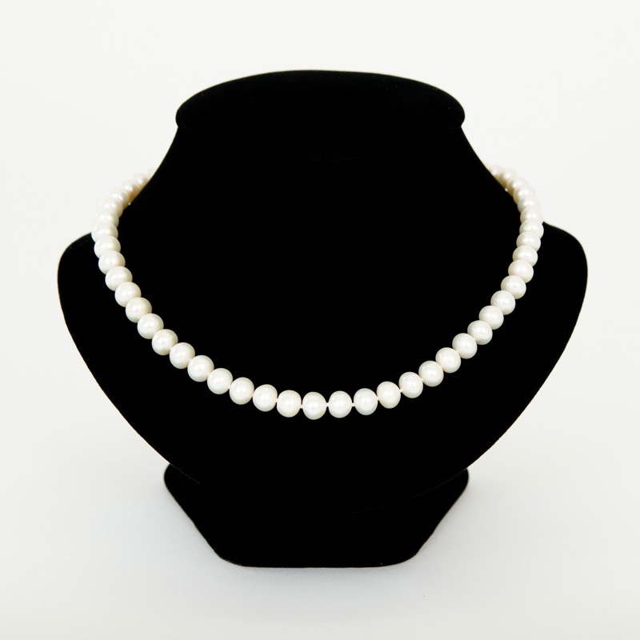
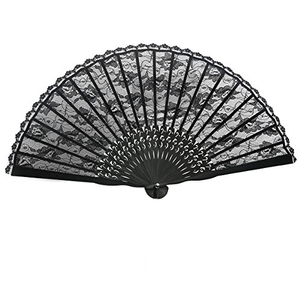
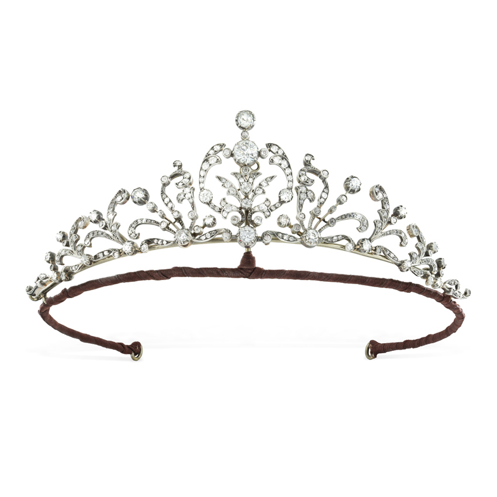
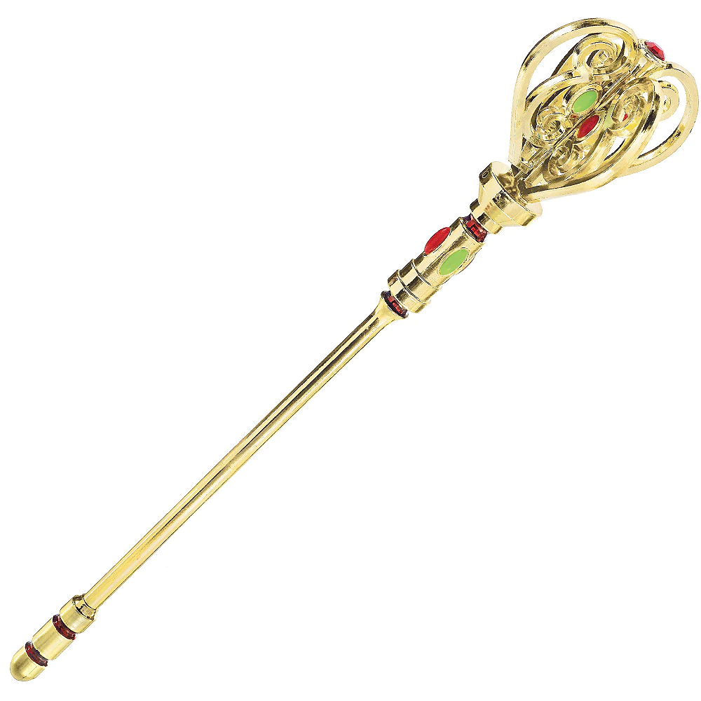

The royal houses of Plantagenet, Lancaster, York, and Tudor are complicated webs of multiple spouses, secret affairs, and illegitimate children. Follow the inheritance of different royal artifacts through the family tree.
The royal scepter was made for John of Gaunt; however, he never rose to kingship to use it. Both Henry IV and Henry V used the scepter, one after the other, to rule effectively. Henry V gave the scepter to Catherine of Valois for safekeeping; however, Catherine immediately gifted the artifact to her secret lover Owen Tudor. Duchess Blanche of Lancaster prized her tiara above all her possessions. Following her demise to the plague, her husband John inherited the tiara. He gave it to his second wife, Constance of Castille, who left it for John’s son Henry IV. The tiara was then inherited by Henry V, then finally by Henry VI. The delicate freshwater pearls were first worn by Catherine Swanford, who quickly bored of them and then passed them on to Lady Constance. Lady Constance of Castille was so delighted by the pearls, she bequeathed them to her husband, John of Gaunt. John recognized the importance of the pearls to his beloved, passing them down to his son, who then passed it on to his own son, Henry V. King Henry V gifted them to his wife, who insidiously gave them to Owen Tudor. The lace fan of Catherine Swanford passed in much the same way as the pearls to Owen Tudor: Catherine, Constance, John, Henry IV, Henry V, Catherine, and then Owen. Owen then left the fan in his will to his son Edmund Tudor. Edmund gave the fan to his son Henry, who in turn presented it to his bride Elizabeth on their wedding day.    